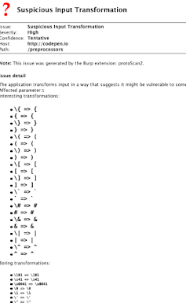

Suspicious input transformations
The initial probe used to identify suspicious behaviour should be as simple and generic as possible. Take the following payload which exploits FreeMarker SSTI:
<#assign ex="freemarker.template.utility.Execute"?new()> ${ex("id")}
We can easily roll this back to a more generic payload that will identify most template engines using a specific popular statement syntax:
${7*7} (expect 49)
Can we expand the coverage of this to detect generic code evaluation? We could try something like:
7*7 (expect 49)
but that will only work on numeric inputs. To detect injection into strings, we need something like:
\x41 (expect A)
However many languages, notably including SQL, don't support hex escapes. This probe can be made one step more generic, to support almost every language:
\\ (expect \)
At this point we have our very first probe for detecting suspicious input transformations. We can now move to the 'Scan' stage of the development process, trying out this payload on a range of applications and seeing what it throws up. Provided the probe is good and the testbed is large enough (more on that later), we'll get a suitably sized set of results which we can manually investigate to find out what's interesting.
In this case, the first step to understanding the behaviour is to look for other input transformations like \x41=>A. By comparing the application's handling of a known-bad escape sequence with other characters, we can gain subtle clues to which characters has special significance server-side. For example, using the baseline of \zz we can easily spot the anomaly:
\zz => \zz
\" => \"
\$ => \$
\{ => {
\x41 => \x41
This tells us that the { character has special significance. Having repeated and refined this manual investigation process a few times, we can loop back around to the 'Implement' stage and automate it. Here's a screenshot of the scanner's output on a page that is vulnerable to Markdown injection:

And a page that isn't vulnerable to anything, but merely calls stripslashes() on the input:

This automated followup means that we can tell how exploitable the endpoint is at a glance. A potential further refinement would be to recognise and classify specific transformation fingerprints.
Note that even though this technique is capable of detecting a huge range of vulnerabilities, on most inputs it only sends a single request. This combination of flexibility and efficiency is at the heart of iterative scanning.
If you're aware of (or able to construct) targets that are definitely vulnerable, you can verify the scanner's susceptibility to false negatives. I found the scanner failed to identify vulnerabilities in JSON responses, since although the server would decode \\ to \, it would then escape the \ back to \\ when embedding it in a JSON string. This was easily fixed by JSON decoding responses where appropriate.
Unfortunately, there's a more serious weakness. This approach relies on user input being reflected after it's been processed. For example, if an application places user input into a SQL SELECT statement, but never displays that query, the vulnerability will be missed entirely. This is a fundamental flaw with relying on suspicious input transformations to detect vulnerabilities.